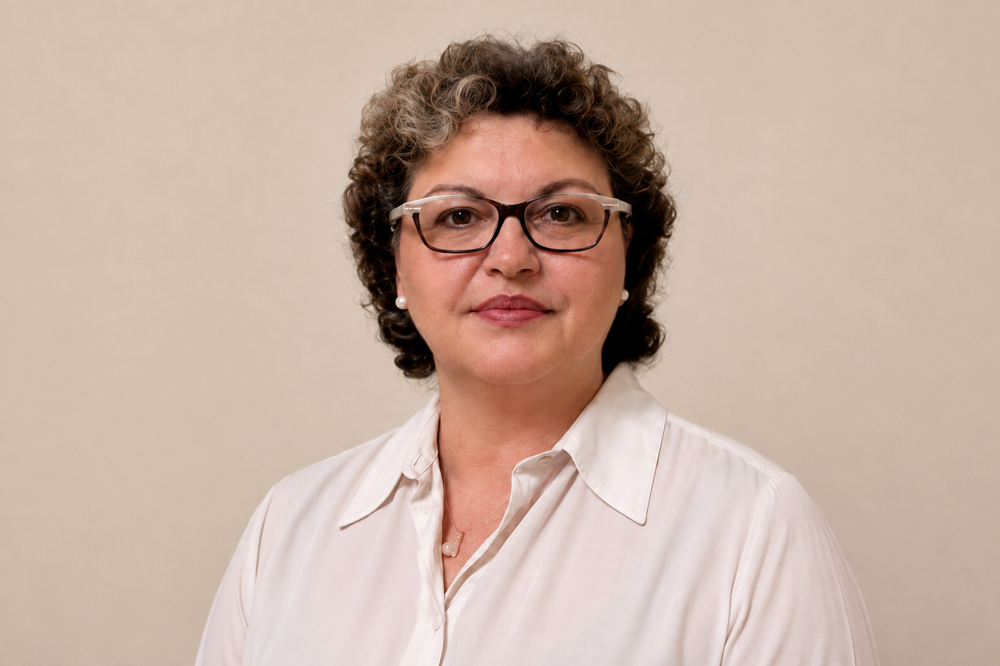

Σχεδιασμός εκπαιδευτικών προγραμμάτων
Από τη διάγνωση των αναγκών έως τον σχεδιασμό, την υλοποίηση και την αξιολόγηση ενός ολοκληρωμένου προγράμματος κατάρτισης.
Μάθετε περισσότερα ↗Σχεδιάζουμε εμπειρίες μάθησης που συνδέουν τη θεωρία με την πράξη και βοηθούν εκπαιδευτές και οργανισμούς να εξελιχθούν.

Γνώση
Συμμετοχή
Εξέλιξη
«Η εκπαίδευση αποκτά νόημα, επειδή μέσα από τη μάθηση οι άνθρωποι ανακαλύπτουν ότι μπορούν να διαμορφώνουν και να αναδιαμορφώνουν τον εαυτό τους.»
Είμαι η Ελένη Γεροσταμούλου, πιστοποιημένη Εκπαιδεύτρια δια Βίου Μάθησης από την ΑνΑΔ, κάτοχος μεταπτυχιακού τίτλου στη Συνεχιζόμενη Εκπαίδευση και τη Δια Βίου Μάθηση.
Διαθέτω εμπειρία στον σχεδιασμό, τον συντονισμό και την υλοποίηση προγραμμάτων επαγγελματικής κατάρτισης, καθώς και στην εκπαίδευση και υποστήριξη υποψήφιων εκπαιδευτών. Στο πλαίσιο συνεργασιών με πιστοποιημένα ΚΕΚ, αναλαμβάνω κατάρτιση σχετική με το επαγγελματικό προσόν «Εκπαιδευτής δια Βίου Μάθησης – Επίπεδο 5 (ΕΒΜ5)», ενώ παρέχω και εξατομικευμένη καθοδήγηση σε υποψήφιους εκπαιδευτές.
Οι θεματικές που διδάσκω περιλαμβάνουν τη διάγνωση αναγκών μάθησης, τον σχεδιασμό, την υλοποίηση και την αξιολόγηση εκπαιδευτικών προγραμμάτων. Στην εκπαιδευτική μου προσέγγιση αξιοποιώ βιωματικές τεχνικές και ψηφιακά εργαλεία, δημιουργώντας ένα συμμετοχικό περιβάλλον που συνδέει τη θεωρία με την πράξη και την εμπειρία με τη μάθηση.
Κάθε συνεργασία σχεδιάζεται με σαφή στόχο, ενεργή συμμετοχή και πρακτικό αποτέλεσμα.
Από τη διάγνωση των αναγκών έως τον σχεδιασμό, την υλοποίηση και την αξιολόγηση ενός ολοκληρωμένου προγράμματος κατάρτισης.
Μάθετε περισσότερα ↗Κατάρτιση μέσω συνεργασιών με πιστοποιημένα ΚΕΚ ή στο πλαίσιο εγκεκριμένων μονοεπιχειρησιακών προγραμμάτων της ΑνΑΔ σε επιχειρήσεις, καθώς και εξατομικευμένη καθοδήγηση υποψήφιων εκπαιδευτών.
Μάθετε περισσότερα ↗Σχεδιασμός και υλοποίηση προγραμμάτων επαγγελματικής κατάρτισης, προσαρμοσμένων στις ανάγκες κάθε εταιρείας, οργανισμού και ομάδας.
Μάθετε περισσότερα ↗Με επίκεντρο τον εκπαιδευόμενο και τις πραγματικές ανάγκες του.
Άρθρα και πρακτικές προσεγγίσεις γύρω από την εκπαίδευση ενηλίκων και τη δια βίου μάθηση.
Δείτε όλα τα άρθρα ↗Η συμμετοχή χρειάζεται να σχεδιάζεται ώστε να δίνει σε όλους ουσιαστικές ευκαιρίες να σκεφτούν, να εκφραστούν και να συμβάλουν.
Διαβάστε το άρθρο ↗